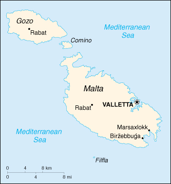

|
Malta | |
| Introduction Geography People Government Economy Communications Transportation Military Transnational Issues | ||
|  | ||
| Malta | Introduction | Top of Page |
| Background: | Great Britain formally acquired possession of Malta in 1814. The island staunchly supported the UK through both World Wars and remained in the Commonwealth when it became independent in 1964. A decade later Malta became a republic. Over the last 15 years, the island has become a major freight transshipment point, financial center, and tourist destination. It is an official candidate for EU membership. |
| Malta | Geography | Top of Page |
| Location: | Southern Europe, islands in the Mediterranean Sea, south of Sicily (Italy) |
| Geographic coordinates: | 35 50 N, 14 35 E |
| Map references: | Europe |
| Area: |
total:
316 sq km
land: 316 sq km water: 0 sq km |
| Area - comparative: | slightly less than twice the size of Washington, DC |
| Land boundaries: | 0 km |
| Coastline: | 196.8 km (does not include 56.01 km for the island of Gozo) |
| Maritime claims: |
contiguous zone:
24 NM
continental shelf: 200-m depth or to the depth of exploitation exclusive fishing zone: 25 NM territorial sea: 12 NM |
| Climate: | Mediterranean with mild, rainy winters and hot, dry summers |
| Terrain: | mostly low, rocky, flat to dissected plains; many coastal cliffs |
| Elevation extremes: |
lowest point:
Mediterranean Sea 0 m
highest point: Ta'Dmejrek 253 m (near Dingli) |
| Natural resources: | limestone, salt, arable land |
| Land use: |
arable land:
32%
permanent crops: 3% permanent pastures: 0% forests and woodland: 4% other: 61% (2000 est.) |
| Irrigated land: | 11.45 sq km (2000 est.) |
| Natural hazards: | NA |
| Environment - current issues: | very limited natural fresh water resources; increasing reliance on desalination |
| Environment - international agreements: |
party to:
Air Pollution, Biodiversity, Climate Change, Desertification, Endangered Species, Hazardous Wastes, Law of the Sea, Marine Dumping, Nuclear Test Ban, Ozone Layer Protection, Ship Pollution, Wetlands
signed, but not ratified: Climate Change-Kyoto Protocol |
| Geography - note: | the country comprises an archipelago, with only the three largest islands (Malta, Ghawdex or Gozo, and Kemmuna or Comino) being inhabited; numerous bays provide good harbors; Malta and Tunisia are discussing the commercial exploitation of the continental shelf between their countries, particularly for oil exploration |
| Malta | People | Top of Page |
| Population: | 394,583 (July 2001 est.) |
| Age structure: |
0-14 years:
19.98% (male 40,791; female 38,062)
15-64 years: 67.49% (male 133,914; female 132,402) 65 years and over: 12.53% (male 20,643; female 28,771) (2001 est.) |
| Population growth rate: | 0.74% (2001 est.) |
| Birth rate: | 12.75 births/1,000 population (2001 est.) |
| Death rate: | 7.74 deaths/1,000 population (2001 est.) |
| Net migration rate: | 2.37 migrant(s)/1,000 population (2001 est.) |
| Sex ratio: |
at birth:
1.09 male(s)/female
under 15 years: 1.07 male(s)/female 15-64 years: 1.01 male(s)/female 65 years and over: 0.72 male(s)/female total population: 0.98 male(s)/female (2001 est.) |
| Infant mortality rate: | 5.83 deaths/1,000 live births (2001 est.) |
| Life expectancy at birth: |
total population:
78.1 years
male: 75.64 years female: 80.79 years (2001 est.) |
| Total fertility rate: | 1.92 children born/woman (2001 est.) |
| HIV/AIDS - adult prevalence rate: | 0.52% (1999 est.) |
| HIV/AIDS - people living with HIV/AIDS: | NA |
| HIV/AIDS - deaths: | less than 100 (1999 est.) |
| Nationality: |
noun:
Maltese (singular and plural)
adjective: Maltese |
| Ethnic groups: | Maltese (descendants of ancient Carthaginians and Phoenicians, with strong elements of Italian and other Mediterranean stock) |
| Religions: | Roman Catholic 91% |
| Languages: | Maltese (official), English (official) |
| Literacy: |
definition:
age 10 and over can read and write
total population: 88.76% male: 86.91% female: 89.55% (1995 census) |
| Malta | Government | Top of Page |
| Country name: |
conventional long form:
Republic of Malta
conventional short form: Malta local long form: Repubblika ta' Malta local short form: Malta |
| Government type: | republic |
| Capital: | Valletta |
| Administrative divisions: | none (administered directly from Valletta) |
| Independence: | 21 September 1964 (from UK) |
| National holiday: | Independence Day, 21 September (1964) |
| Constitution: | 1964 constitution substantially amended on 13 December 1974 |
| Legal system: | based on English common law and Roman civil law; accepts compulsory ICJ jurisdiction, with reservations |
| Suffrage: | 18 years of age; universal |
| Executive branch: |
chief of state:
President Guido DE MARCO (since 4 April 1999)
head of government: Prime Minister Eddie FENECH ADAMI (since 6 September 1998); Deputy Prime Minister Lawrence GONZE (since 4 April 1999) cabinet: Cabinet appointed by the president on the advice of the prime minister elections: president elected by the House of Representatives for a five-year term; election last held NA April 1999 (next to be held by NA April 2004); following legislative elections, the leader of the majority party or leader of a majority coalition is usually appointed prime minister by the president for a five-year term; the deputy prime minister is appointed by the president on the advice of the prime minister election results: Guido DE MARCO elected president; percent of House of Representatives vote - 54% |
| Legislative branch: |
unicameral House of Representatives (usually 65 seats; note - additional seats are given to the party with the largest popular vote to ensure a legislative majority; members are elected by popular vote on the basis of proportional representation to serve five-year terms)
elections: last held 5 September 1998 (next to be held by September 2003) election results: percent of vote by party - PN 51.8%, MLP 46.9%, AD 1.2%; seats by party - PN 35, MLP 30 |
| Judicial branch: | Constitutional Court; Court of Appeal; judges for both courts are appointed by the president on the advice of the prime minister |
| Political parties and leaders: | Alternativa Demokratika/Alliance for Social Justice or AD [Harry VASSALLO]; Malta Labor Party or MLP [Alfred SANT]; Nationalist Party or PN [Edward FENECH ADAMI] |
| Political pressure groups and leaders: | NA |
| International organization participation: | C, CCC, CE, EBRD, ECE, EU (applicant), FAO, G-77, IAEA, IBRD, ICAO, ICFTU, ICRM, IFAD, IFRCS, ILO, IMF, IMO, Inmarsat, Intelsat, Interpol, IOC, IOM (observer), ISO, ITU, NAM, OPCW, OSCE, PCA, UN, UNCTAD, UNESCO, UNIDO, UPU, WCL, WHO, WIPO, WMO, WToO, WTrO |
| Diplomatic representation in the US: |
chief of mission:
Ambassador George SALIBA
chancery: 2017 Connecticut Avenue NW, Washington, DC 20008 telephone: [1] (202) 462-3611, 3612 FAX: [1] (202) 387-5470 consulate(s): New York |
| Diplomatic representation from the US: |
chief of mission:
Ambassador George SALIBA
embassy: 3rd Floor, Development House, Saint Anne Street, Floriana, Malta VLT 01 mailing address: P. O. Box 535, Valletta, Malta, CMR 01 telephone: [356] 235960 through 235965 FAX: [356] 243229 |
| Flag description: | two equal vertical bands of white (hoist side) and red; in the upper hoist-side corner is a representation of the Saint George Cross, edged in red |
| Malta | Economy | Top of Page |
| Economy - overview: | Major resources are limestone, a favorable geographic location, and a productive labor force. Malta produces only about 20% of its food needs, has limited freshwater supplies, and has no domestic energy sources. The economy is dependent on foreign trade, manufacturing (especially electronics and textiles), and tourism. Malta is privatizing state-controlled firms and liberalizing markets in order to prepare for membership in the European Union. However, the island is divided politically over the question of joining the EU. The sizable budget deficit remains a key concern. |
| GDP: | purchasing power parity - $5.6 billion (2000 est.) |
| GDP - real growth rate: | 3.4% (2000 est.) |
| GDP - per capita: | purchasing power parity - $14,300 (2000 est.) |
| GDP - composition by sector: |
agriculture:
2.8%
industry: 25.5% services: 71.7% (1999) |
| Population below poverty line: | NA% |
| Household income or consumption by percentage share: |
lowest 10%:
NA%
highest 10%: NA% |
| Inflation rate (consumer prices): | 2.5% (2000 est.) |
| Labor force: | 145,901 (1999) |
| Labor force - by occupation: | industry 24%, services 71%, agriculture 5% (1999 est.) |
| Unemployment rate: | 4.5% (3rd Quarter 2000) |
| Budget: |
revenues:
$1.6 billion
expenditures: $1.73 billion, including capital expenditures of $265.4 million (1999) |
| Industries: | tourism; electronics, ship building and repair, construction; food and beverages, textiles, footwear, clothing, tobacco |
| Industrial production growth rate: | NA% |
| Electricity - production: | 1.65 billion kWh (1999) |
| Electricity - production by source: |
fossil fuel:
100%
hydro: 0% nuclear: 0% other: 0% (1999) |
| Electricity - consumption: | 1.534 billion kWh (1999) |
| Electricity - exports: | 0 kWh (1999) |
| Electricity - imports: | 0 kWh (1999) |
| Agriculture - products: | potatoes, cauliflower, grapes, wheat, barley, tomatoes, citrus, cut flowers, green peppers; pork, milk, poultry, eggs |
| Exports: | $2 billion (f.o.b., 1999) |
| Exports - commodities: | machinery and transport equipment, manufactures |
| Exports - partners: | US 21.4%, France 15.2%, Germany 12.6%, UK 9.3%, Italy 4.9% (1999) |
| Imports: | $2.6 billion (f.o.b., 1999) |
| Imports - commodities: | machinery and transport equipment, manufactured and semi-manufactured goods; food, drink, and tobacco |
| Imports - partners: | France 19.1%, Italy 16.7%, UK 10.9%, Germany 10.0%, US 8.5% (1999) |
| Debt - external: | $130 million (1997) |
| Economic aid - recipient: | $NA |
| Currency: | Maltese lira (MTL) |
| Currency code: | MTL |
| Exchange rates: | Maltese liri per US dollar - 0.4370 (January 2001), 0.4376 (2000), 0.3994 (1999), 0.3885 (1998), 0.3857 (1997), 0.3604 (1996) |
| Fiscal year: | 1 April - 31 March |
| Malta | Communications | Top of Page |
| Telephones - main lines in use: | 187,000 (1997) |
| Telephones - mobile cellular: | 17,691 (1997) |
| Telephone system: |
general assessment:
automatic system satisfies normal requirements
domestic: submarine cable and microwave radio relay between islands international: 2 submarine cables; satellite earth station - 1 Intelsat (Atlantic Ocean) |
| Radio broadcast stations: | AM 1, FM 18, shortwave 6 (1999) |
| Radios: | 255,000 (1997) |
| Television broadcast stations: | 6 (2000) |
| Televisions: | 280,000 (1997) |
| Internet country code: | .mt |
| Internet Service Providers (ISPs): | 2 (2000) |
| Internet users: | 40,000 (2000) |
| Malta | Transportation | Top of Page |
| Railways: | 0 km |
| Highways: |
total:
1,742 km
paved: 1,677 km unpaved: 65 km (1997) |
| Waterways: | none |
| Ports and harbors: | Marsaxlokk, Valletta |
| Merchant marine: |
total:
1,414 ships (1,000 GRT or over) totaling 28,191,090 GRT/46,773,603 DWT
ships by type: bulk 443, cargo 394, chemical tanker 48, combination bulk 12, combination ore/oil 14, container 69, liquefied gas 2, livestock carrier 3, multi-functional large-load carrier 2, passenger 7, passenger/cargo 1, petroleum tanker 296, refrigerated cargo 37, roll on/roll off 50, short-sea passenger 15, specialized tanker 3, vehicle carrier 18 note: includes some foreign-owned ships registered here as a flag of convenience: Argentina 1, Bermuda 1, Belgium 1, Bangladesh 2, Bulgaria 11, China 7, Costa Rica 1, Cuba 2, Cyprus 15, Denmark 1, Estonia 2, Finland 1, Germany 23, Greece 258, Hong Kong 3, Croatia 9, Hungary 1, India 2, Israel 2, Italy 17, South Korea 1, Lebanon 2, Latvia 2, Lithuania 1, Monaco 14, Nigeria 1, Netherlands 10, Norway 31, Poland 8, Romania 3, Russia 39, Singapore 6, Spain 3, Sweden 3, Syria 1, Switzerland 25, UAE 2, Turkey 24, UK 8, Ukraine 9, US 9, Venezuela 1, Vietnam 1 (2000 est.) |
| Airports: | 1 (2000 est.) |
| Airports - with paved runways: |
total:
1
over 3,047 m: 1 (2000 est.) |
| Malta | Military | Top of Page |
| Military branches: | Armed Forces (including land forces, an air squadron, a maritime squadron, and the Revenue Security Corps), Maltese Police Force |
| Military manpower - availability: | males age 15-49: 98,953 (2001 est.) |
| Military manpower - fit for military service: | males age 15-49: 78,783 (2001 est.) |
| Military expenditures - dollar figure: | $201 million (FY98) |
| Military expenditures - percent of GDP: | 5.5% (FY98) |
| Malta | Transnational Issues | Top of Page |
| Disputes - international: | none |
| Illicit drugs: | minor transshipment point for hashish from North Africa to Western Europe |
{kind=link}
{kind=link}